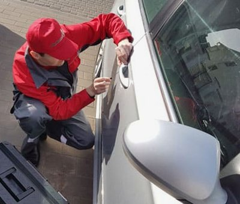
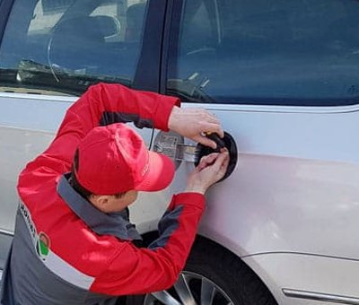

Открыть Ровер от 50 руб. По Минску и области. мастер в каждом районе Минска, весь инструмент с собой. Оставьте заявку: +375 (29) 751-25-51
Вызвать мастера · +375 (29) 751-25-51Land Rover и Range Rover — внедорожники с многоуровневой системой доступа и дорогой электроникой, поэтому захлопнутый ключ или сбой замка лучше не решать своими силами.
Грубое вскрытие повреждает уплотнители, стекло и проводку, а ремонт на этих машинах обходится недёшево — разумнее сразу вызвать мастера.

Дверь Rover без ключа открывают бесключевым инструментом через верхний угол проёма, аккуратно расширив его клином и заведя щуп к тяге блокировки.
Подручные предметы для этого не подходят — они мнут тонкую кромку и нарушают геометрию двери.
Если разрядился смарт-ключ, помогает скрытое механическое жало под накладкой ручки или поднесение ключа к штатной зоне считывания.
Капот на Rover открывается через привод; при закисании или обрыве троса защёлку аккуратно освобождают, не деформируя облицовку.
Багажник с электроприводом при разряде открывают, проверив аварийное питание, либо добираются до механизма через доступ из салона.

Доверить вскрытие Rover опытному мастеру выгоднее, чем экспериментировать с чувствительной электроникой внедорожника.
Специалист открывает машину за несколько минут, с гарантией и без демонтажа обшивки там, где это возможно.
Наши преимущества:
При необходимости мастер сразу устранит причину отказа — заменит личинку, отрегулирует тягу или восстановит электропривод.
Rover не открывается в Минске или области? Звоните: +375 (29) 751-25-51. Приедем за 15 минут и вскроем без повреждений. Стоимость — от 50 руб.
Мастер приедет за 15–30 минут и откроет без повреждений. Работаем круглосуточно по Минску и области.
Откроем дверь авто без повреждений замков и ЛКП
Открытие багажника при любой ситуации быстро и аккуратно
Откроем капот, если оборвался трос или сел аккумулятор
Поможем, если заклинил лючок бензобака
Запуск двигателя при разряженном аккумуляторе
Ремонт замков дверей и багажника автомобиля
Если ключ не поворачивается или заклинил